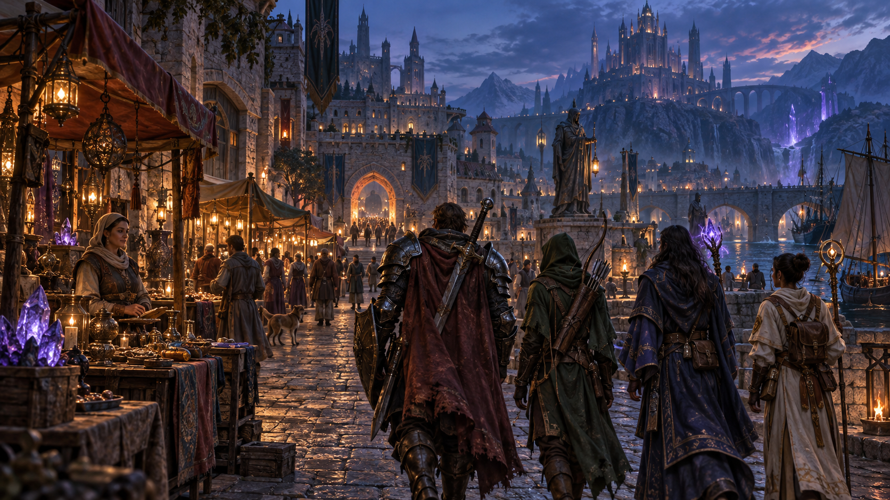
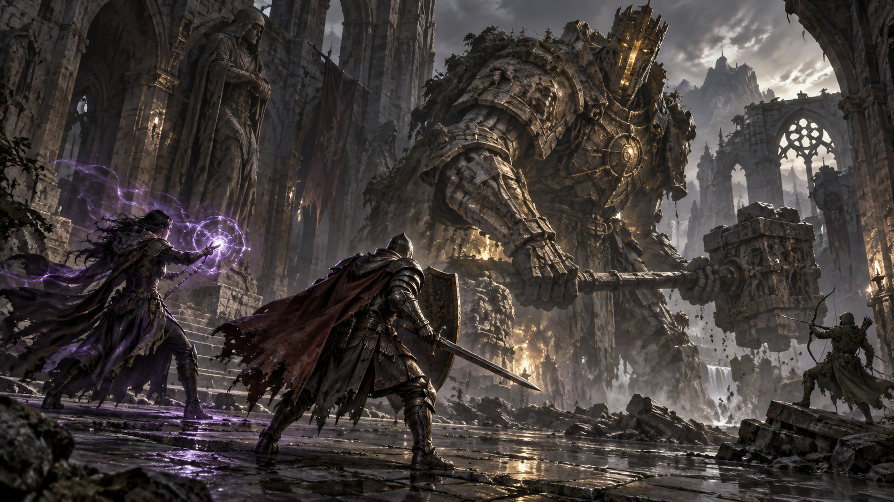

Tehdidi sen belirle.
Can, hasar ve algılama mesafesini ayarla. Karşılaşmanın EXP, altın ve eşya ödüllerini düzenle.
MMO Enemy ControlUNREAL ENGINE · MODÜLER MMO ALTYAPISI
Yıllardır “Ben olsam…” dediğin MMORPG’yi şimdi kendi fikirlerinle şekillendir.
Düşmanlardan görevlere, eşyalardan yeteneklere. Unreal Engine içinde geliştirdiğimiz görsel panellerle hazır sistemlerin desteklediği alanları kod yazmadan düzenle.
Geliştirme sürecindeki modüler MMO altyapısı.
HİKÂYE SENİNLE BAŞLAR
Bir meydandaki tüccar. Uzak bir kaleye uzanan görev. Ekibini bir araya getiren karşılaşma. Her deneyimin arkasında birbirini tamamlayan sistemler var.

KEŞİF · TİCARET · HİKÂYE
Bu sayfadaki “Konsept görsel” etiketli çizimler yapay zekâyla üretildi; gerçek oynanış görüntüsü değildir.
FİKRİNDEN OYUNUN İÇİNE
Hazır sistemleri kendi tasarımına uyarla. Verileri, içerikleri ve desteklenen kuralları Unreal Editor içindeki panellerden yönet.
Can, hasar ve algılama mesafesini ayarla. Karşılaşmanın EXP, altın ve eşya ödüllerini düzenle.
MMO Enemy ControlKategoriler, ekipman yuvaları, kullanım koşulları ve değerler. Eşyaları ikon ve model bağlantılarıyla tanımla.
MMO Item ControlHazır yetenek yapılarında hasar, mana, bekleme süresi, animasyon ve desteklenen hedefleme alanlarını düzenle.
MMO Skill ControlGörev metinlerini, koşulları, hedefleri, görev veren karakterleri ve ödülleri kendi hikâyene göre şekillendir.
MMO Quest ControlSatıcılara ayrı profiller oluştur. Ürünleri, alış ve satış fiyatlarını düzenleyerek ticaretin temelini kur.
MMO Vendor ControlMevcut HUD bölgelerinin yerleşimini, boyutunu, renklerini ve desteklenen katmanlarını görsel olarak düzenle.
MMO UI ControlKlan pelerin kataloğunu yönet. Uyumlu modelleri, fiyatları ve rütbe koşullarını tanımla.
MMO Clan ControlKod yazmadan düzenleme, hazır panellerin desteklediği alanları kapsar. Yeni mekanikler ve özel davranışlar ek geliştirme gerektirebilir.

KARŞILAŞMA · STRATEJİ · ÖDÜL
Düşmanın gücü. Yeteneğin zamanlaması. Kazanılan ödül.
Oyuncuların hatırlayacağı deneyimi ayrıntılar şekillendirir.
UNREAL EDITOR İÇİNDE
Düzenleme panelleri, fikrinle oyundaki içerik arasında pratik bir çalışma alanı oluşturur.
Üzerinde çalışacağın düşman, eşya, görev veya diğer desteklenen paneli aç. İlgili kaydı ya da profili seç.
Desteklenen değerleri, içerik bağlantılarını ve kuralları düzenle. Dünyanın kimliğini bu kararlarla oluştur.
İlgili sistemin kaydetme, yayınlama, yükleme veya paketleme adımlarını tamamla. Sonucu oyun içinde kontrol et.
PANELLERİN ARKASINDA
Envanter, ekipman, banka, parti, sohbet, takas ve klan yapıları aynı modüler projenin parçaları.
Oyuncu istekleri; yetki, sahiplik ve oyun kuralları açısından sunucu tarafında değerlendirilir.
Kalıcı oyuncu verileri backend ve veritabanı katmanında işlenir. Oyun içi değişikliklerin sonuçları oyun sunucusu üzerinden oyuncuya iletilir.
AKLINDAKİ SORULAR
Tanıttığımız proje, Unreal Engine üzerinde geliştirilen modüler MMO altyapısı ve düzenleme panelleridir. Geliştirme süreci devam ediyor. Amaç, hazır sistemleri kullanarak kendi MMO deneyimini şekillendirebilmen.
Hazır panellerin desteklediği değerleri, içerikleri ve kuralları düzenleyebilirsin. Yeni mekanikler kodlama gerektirebilir. Unreal Engine, içerik hazırlama, paketleme ve sunucu yönetimi süreçlerinde teknik bilgi yine gereklidir.
Kullanım hakkına sahip olduğun uyumlu içerikler ilgili sistemlere bağlanabilir. Karakterlerde iskelet ve animasyon uyumu; diğer varlıklarda projenin beklediği yapı ve ayarlar kontrol edilmelidir.
Bu sayfada henüz bir demo, fiyat veya lisans teklifi duyurulmuyor. Gelişim paylaşımlarını ve yeni duyuruları aşağıdaki resmî kanallardan takip edebilirsin.
BİRLİKTE TAKİP EDELİM
Panelleri, geliştirme adımlarını ve yeni duyuruları takip et.
Önce hangi sistemi görmek istediğini YouTube anketinde paylaş.